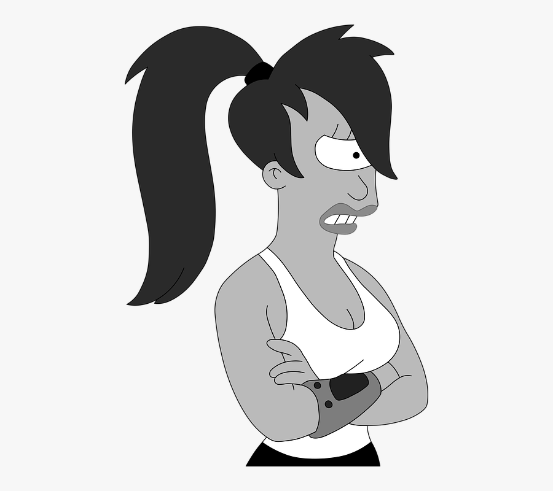
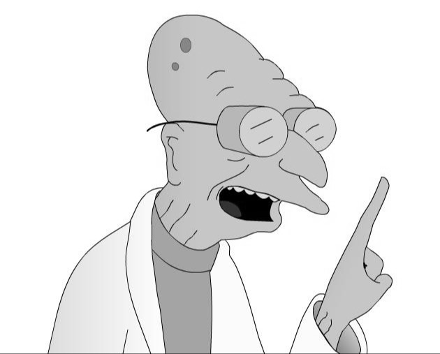
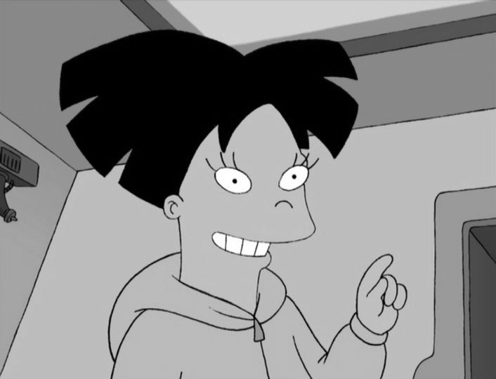
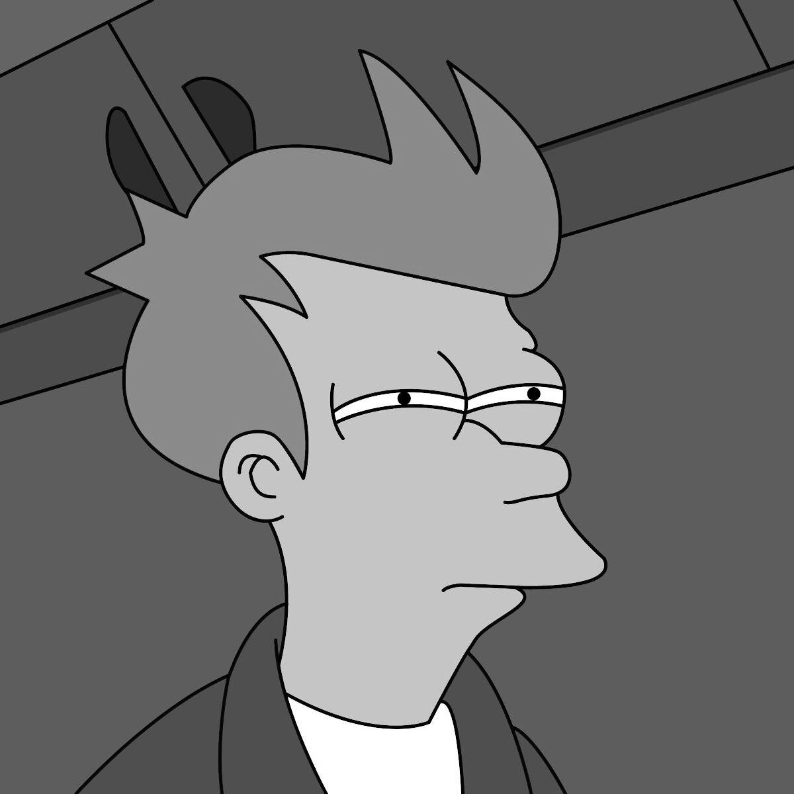
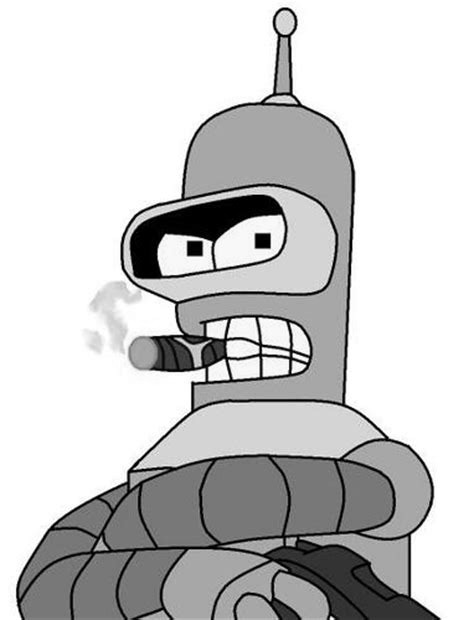
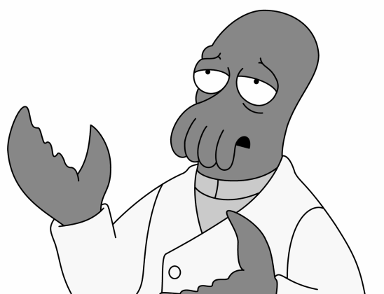
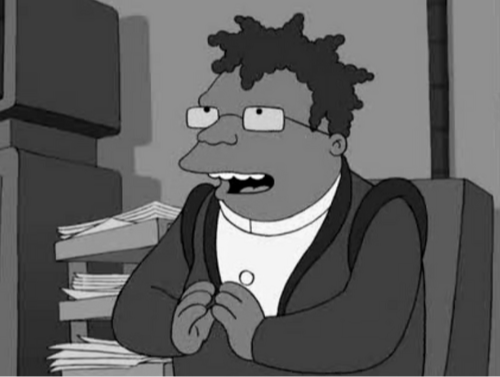

¿Qué es?
Futurama es una serie de televisión de animación para adultos creada por Matt Groening, creador de la
popular serie humorística Los Simpson. Fue producida por Matt Groening y David X. Cohen para la
cadena Fox, Comedy Central y Hulu. La serie sigue las aventuras de un repartidor de pizza, Philip
Fry, quien el 31 de diciembre de 1999 tropieza accidentalmente, cae por casualidad en una cápsula
criogénica y despierta mil años después. En Estados Unidos la serie comenzó a emitirse por Fox el 28
de marzo de 1999 y se canceló el 10 de agosto de 2003. Posteriormente, fue renovada por Comedy
Central y se emitió en ese canal desde 2008 hasta 2013, cuando se emitió el último episodio,
titulado "Meanwhile".
Personajes Principales
Philip J. Fry
Fry es un muchacho que trabajaba como repartidor de pizza. Fue congelado justo antes de la madrugada
del día de Año Nuevo del 31 de diciembre de 1999 y despertó durante el fin de año de 2999. Obtuvo un
empleo en Planet Express, una empresa propiedad de su pariente más cercano (su tatara-sobrino), el
profesor Hubert Farnsworth, donde trabaja como repartidor de carga. A consecuencia de ciertas
medidas que toma en el episodio "Roswell That Ends Well", él es su propio abuelo. Está enamorado
de Leela.

Bender Bending Rodríguez
Es un robot alcohólico, fumador, egocéntrico, egoísta y ladrón. Originalmente está programado para
doblar objetos. Fry es su compañero de apartamento. Fue fabricado en México. Es adicto al vicio, a
las apuestas ilegales y a las Robopilinguis. Bebe constantemente alcohol para mantenerse libre de
óxido. Al dejar de ingerir alcohol por unos días, experimenta un estado de ebriedad. A pesar de
todos sus malos hábitos, es el mejor amigo de Fry. Su frase característica es "Besa mi brillante
trasero metálico.

Dr. John A. Zoidberg
Es un extraterrestre parecido a una langosta con tentáculos en la boca procedente del planeta Decapod
10. Se autoproclama experto en humanos, a pesar de sus limitados conocimientos de anatomía humana
(confunde el corazón con el estómago y a los hombres con las mujeres). Proporciona cuidados médicos
incompetentes a la tripulación.

Hermes Conrad
Un burócrata jamaiquino con un don especial para archivar. Fue campeón mundial de limbo en su
juventud. Está casado con LaBarbara y tiene un hijo de 12 años, Dwight.
Episodios
| Temporada |
Episodios |
Primera emisión |
| 1 |
13 |
28 de marzo de 1999 |
| 2 |
19 |
21 de noviembre de 1999 |
| 3 |
22 |
21 de enero de 2001 |
| 4 |
18 |
10 de febrero de 2002 |
| 5 |
16 |
23 de marzo de 2008 |
| 6 |
26 |
24 de junio de 2010 |
| 7 |
26 |
20 de junio de 2012 |
| 8 |
26 |
24 de julio de 2023 |

Turanga Leela
Es una joven cíclope con melena morada y es la capitana de la nave de Planet Express. Al
principio de
la
serie creyó que era una huérfana extraterrestre con el deseo de conocer sus orígenes. Más tarde
se
dio
cuenta de que es hija de unos mutantes de alcantarilla. Aunque en casi toda la serie daba la
impresión de no corresponder a los sentimientos de Fry, la verdad es que Leela siempre ha estado
enamorada de él; al final de la película "Into the Wild Green Yonder" admite que lo ama y a
partir
de la
sexta temporada empieza un noviazgo con él. Su nombre hace referencia a la obra musical de
Olivier
Messiaen: "Turangalila".

Profesor Hubert J. Farnsworth
Nacido el 9 de abril de 2841, el profesor Hubert Farnsworth tiene a Fry como un pariente lejano
(su
tatara... tío). Farnsworth fundó Planet Express y es un inventor destacado. Tiene su propio clon
creado para ser su sucesor, Cubert Farnsworth.

Amy Wong
Amy es una chica increíblemente rica, muy guapa y simpática. Con ella, Planet Express es muy
propenso
a tener accidentes. Es una estudiante de ingeniería en la Universidad de Marte y heredera del
hemisferio occidental de ese planeta. Nació en Marte, aunque es étnicamente asiática. Sus padres
son
Leo y Ena. Inicialmente se la ve algo promiscua, aunque luego desarrolló una larga relación con
Kif
Kroker. También tuvo relaciones sumamente breves con Fry y Bender. El profesor Farnsworth la
contrató para beneficiarse de la compatibilidad que comparten referente a la sangre. En el
doblaje
de Hispanoamérica, cada vez que sufre un accidente o se cae, ella grita Hô Chí Minh refiriéndose
al
poeta y político vietnamita.
